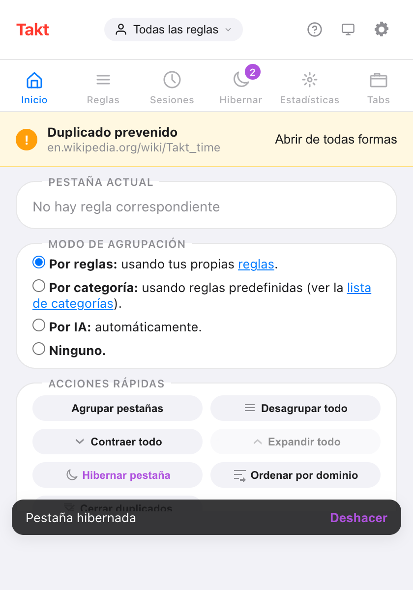
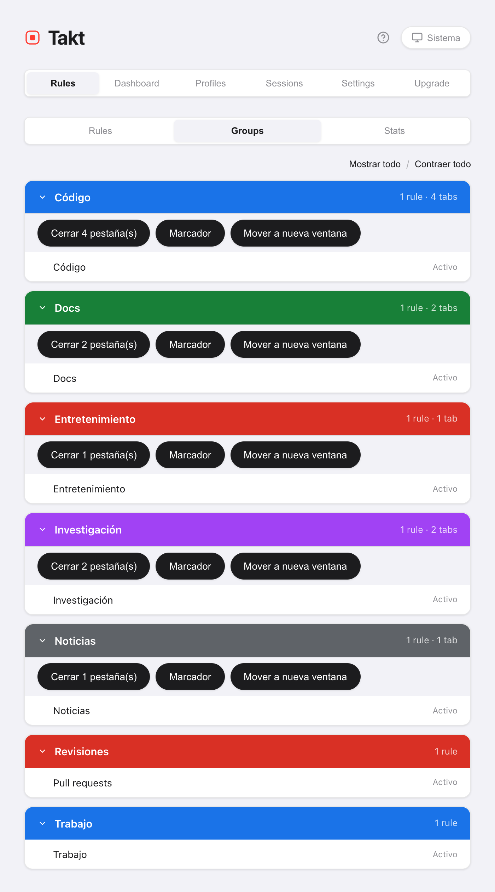

Respuesta corta: Takt reúne todas las acciones masivas sobre pestañas en un popup y en tres atajos predeterminados. Alt+Shift+G agrupa, Alt+Shift+U desagrupa, Alt+Shift+C contrae.
- Free: Agrupar, Desagrupar, Contraer, Expandir, Cerrar duplicados, Ordenar por dominio (ventana actual) y el panel Tabs.
- Premium: cerrar, guardar como marcador o mover un grupo entero, ordenar todas las ventanas, contraer las demás ventanas y un grupo "Otros" para lo que sobra.
- Todo se ejecuta en tu equipo. Sin cuenta.
¿Qué hace cada botón de limpieza?
El panel Inicio del popup tiene un bloque de Acciones rápidas. Agrupar, Desagrupar, Contraer, Expandir y Cerrar duplicados se ponen en gris cuando no tendrían efecto, así que el bloque también te dice en qué estado están tus pestañas.

| Botón | Qué hace | Alcance | Plan |
|---|---|---|---|
| Agrupar pestañas | Lleva las pestañas a grupos según tus reglas, por categoría o con IA | Todas las ventanas | Free |
| Desagrupar todo | Quita todos los grupos y mantiene todas las pestañas | Todas las ventanas | Free |
| Contraer todo | Pliega cada grupo hasta su etiqueta | Todas las ventanas | Free |
| Expandir todo | Abre todos los grupos | Ventana actual | Free |
| Cerrar duplicados | Cierra las URL repetidas y conserva la primera copia | Ventana actual | Free |
| Ordenar por dominio | Pone juntas las pestañas del mismo sitio | Ventana actual (Free), todas las ventanas (Premium) | Free / Premium |
Agrupar pestañas sigue el modo de agrupación elegido justo encima. En los modos Categoría e IA, el plan Free crea hasta 5 grupos por pasada. Más información en agrupar con reglas y agrupar por categoría o con IA.
¿Cómo ordeno una ventana caótica en cuatro clics?
- Cerrar duplicados. Se cierran las pestañas repetidas de esta ventana. Se queda la copia de más a la izquierda. Si lo haces primero, nunca agrupas las copias.
- Agrupar pestañas. Cada pestaña que coincide cae en su grupo.
- Ordenar por dominio. Dentro de cada grupo, y entre las pestañas sin grupo, las del mismo sitio se colocan juntas. Ordenar nunca mete ni saca una pestaña de un grupo.
- Contraer todo. Cada grupo se pliega hasta su etiqueta de color.
Cerrar duplicados considera que dos URL son la misma según tu ajuste de coincidencia de URL. Por defecto ignora el #fragmento, un www. inicial, la barra final y el orden de los parámetros de consulta.
¿Cuáles son los atajos de teclado?
| Atajo | Acción | Plan |
|---|---|---|
| Alt+Shift+G | Agrupar todas las pestañas | Free |
| Alt+Shift+U | Desagrupar todas las pestañas | Free |
| Alt+Shift+C | Contraer todos los grupos | Free |
| Alt+Shift+Space | Quick Switch: busca cualquier pestaña y salta a ella | Premium |
| Ninguno por defecto | Expandir todos los grupos | Free |
Chrome deja que una extensión sugiera como máximo cuatro atajos, así que Expandir todo viene sin ninguno. Asígnale una tecla en chrome://extensions/shortcuts. Ahí también puedes cambiar los otros cuatro.
¿Cómo veo todas las pestañas abiertas en una lista?
Abre el panel Tabs del popup. Muestra las pestañas de todas las ventanas bajo el nombre de su grupo, de la A a la Z, con las pestañas sin grupo al final. Escribe para filtrar por título o URL. Haz clic en una pestaña para saltar a ella. Este panel es gratis.
¿Puedo cerrar, guardar como marcador o mover un grupo entero?
Sí, con Premium. Hay tres acciones que trabajan sobre el grupo como un todo:
- Cerrar. Cierra las pestañas del grupo. Las fijadas siguen abiertas. La vista Groups te pide confirmación antes.
- Marcador. Guarda el grupo en una carpeta "Takt Bookmarks". Las pestañas siguen abiertas. Necesita el permiso opcional de Marcadores.
- Mover a nueva ventana. Conserva el nombre, el color y el estado plegado del grupo.
Las encontrarás en Opciones → Rules → Groups, o haciendo clic derecho en una página y abriendo Acciones de grupo. El menú contextual también puede mover el grupo a otra ventana que ya tengas abierta.

¿Pueden los grupos contraerse solos?
De tres maneras, todas desactivadas hasta que las actives:
- Por regla. Marca Auto-collapse group en el editor de reglas. Un grupo nuevo creado por esa regla empieza plegado, salvo que contenga la pestaña que estás viendo. Free.
- En la misma ventana. Settings → Tab Groups → Auto-collapse other groups on expand. Abre un grupo y los demás de esa ventana se pliegan. Free.
- Entre ventanas. Auto-collapse groups in other windows when switching focus. Cambia de ventana y, tras 300 ms, los grupos de todas las demás ventanas se pliegan. Premium.

¿Qué pasa con las pestañas que no coinciden con ninguna regla?
Se quedan sin agrupar. Con Premium, activa Others catch-all group y Agrupar pestañas reunirá todas las pestañas sobrantes en un grupo gris "Otros". Las pestañas fijadas y las páginas chrome:// no se tocan. Si vuelves a usar Agrupar pestañas, se reutiliza el mismo grupo Otros. Funciona en el modo Reglas.
Lo que estos botones no hacen
- Ordenar por dominio es puntual. Las pestañas nuevas no se mantienen ordenadas. Además, compara las dos últimas partes del nombre de host, así que
example.co.ukse ordena comoco.uk. - Cerrar duplicados se queda en una ventana. Una copia abierta en otra ventana no se toca.
- Las acciones de grupo están en el menú de la página. Haz clic derecho en la página, no en la barra de pestañas.
- Agrupar pestañas necesita un criterio para agrupar. En el modo Reglas, las pestañas que no coinciden con ninguna regla se quedan sueltas, salvo que Otros esté activado.
Dos clics de pestañas sueltas a una fila de grupos en orden.
Añadir Takt a Chrome, gratisPreguntas frecuentes
¿Cuáles son los atajos de teclado predeterminados de Takt?
Alt+Shift+G agrupa, Alt+Shift+U desagrupa, Alt+Shift+C contrae y Alt+Shift+Space abre Quick Switch (Premium). Expandir todo no tiene tecla predeterminada. Asígnale una en chrome://extensions/shortcuts.
¿Qué pestaña conserva Cerrar duplicados?
La primera copia según el orden de la barra de pestañas, empezando por la izquierda. Las copias posteriores de la ventana actual se cierran. Tu ajuste de coincidencia de URL decide qué cuenta como la misma URL; por defecto se ignora el #fragmento.
¿Los botones de limpieza son gratis?
Agrupar, Desagrupar, Contraer, Expandir, Cerrar duplicados, el panel Tabs y la contracción automática en la misma ventana son gratis. Ordenar por dominio es gratis para la ventana actual. Premium (3 $/mes o 30 $/año) añade ordenar todas las ventanas, las acciones de grupo, la contracción automática entre ventanas y el grupo Otros.
¿Puedo cerrar un grupo de pestañas entero de una vez?
Con Premium, sí: desde la vista Groups de las opciones de Takt, o desde Acciones de grupo en el menú contextual de la página. Cerrar deja fuera las pestañas fijadas, y la vista Groups te pide confirmación antes.